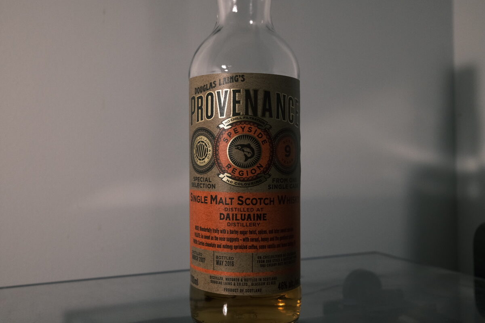

Dailuaine 2007 Douglas Laing's Provenance 9 years 46% (sherry butt)
Kind of obscure Diageo malt, which means they’ve got a Flora and Fauna bottle. Instead of a cute animal this one is from Douglas Laing’s Provenance lineup and was aged in a sherry butt.
Colour Gold
Nose Fresh pears and caramel. Bready, malty. Lighty scented with dried fruits – well integrated sherry. Gingerbread. Scones with jam and cream. Oak, and oak spices. Sugared biscuits.
Palate Dried fruits and milk chocolate digestives. A touch of the spice drawer, but mostly chilli. Thinner but lightly milky mouthfeel… Skim milky? Almond milky? The thinness is doing it a disservice now… A bit of herbaceous oak at the end. Astringency. Doesn’t really give anything else up with water.
Finish Milk chocolate and spices. Full cream milk. A little tannic (huh?). Moderate.
Comments Pleasant, everyday, minimal thought required malt. Nose is by far the most interesting, everything else is serviceable. 80/100.

Posted by Dominic on 04 May 2021